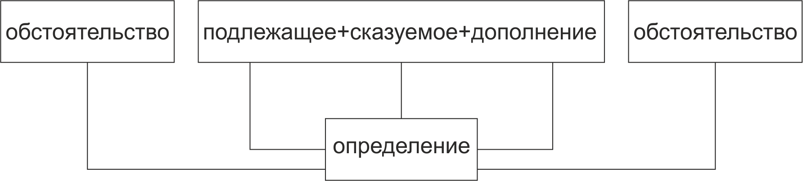

Существует пять членов предложения: подлежащее, сказуемое, дополнение, определение и обстоятельство. Они могут быть выражены разными частями речи: существительным, местоимением, глаголом, прилагательным, числительным и др.
Английское предложение имеет фиксированный порядок слов:

Подлежащее и сказуемое
Являются стержнем предложения, т.е. членами, которые присутствуют обычно в каждом предложении.
Дополнение
Если оно есть, то находится после сказуемого.
Значит, имея предложение из трёх слов, не соединённых предлогами, можно утверждать, что первое слово - подлежащее, второе - сказуемое, третье - дополнение:
Students face problems - первое слово студенты - подлежащее, далее следует сказуемое, значит слово face - глагол to face, который переводится как "сталкиваться" (лицом к лицу), далее следует дополнение problems. Значит, предложение переводится: студенты сталкиваться с проблемами.
Обстоятельство
Обычно находится в конце или начале предложения (однако встречается и в середине, чаще всего в виде наречия неопределенного времени). Существительные, выходящие в состав обстоятельства чаще всего имеют определенный артикль.
Определение
Может определять любой член предложения и обычно располагается до или после определяемого слова, поэтому может находиться в любом месте предложения.
Таким образом:
- в английском предложении от местоположения слова зависит, каким членом предложения оно является; изменение порядка слов в предложении изменяет его смысл;
- одно и то же слово в зависимости от определителей, а также его места в предложении, может обозначать разные части речи.